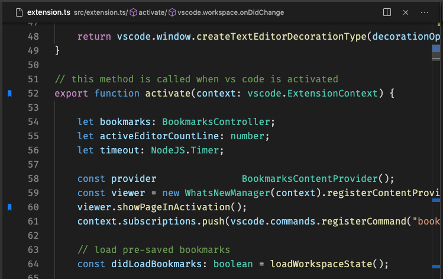
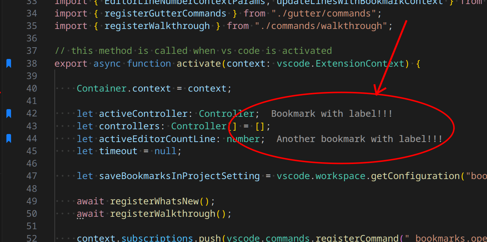

Export, labels, and improved Side Bar
Version 14.1 brings a flexible export command, improved labeled bookmark experience, a more capable Side Bar, and new language translations.
Visual Studio Code Extension
Bookmarks lets you mark important positions in any file, jump between them instantly, select entire regions, and stay oriented across complex codebases—without losing your place.

What's new in 14.1
Version 14.1 brings a flexible export command, improved labeled bookmark experience, a more capable Side Bar, and new language translations.
Features
Mark any line instantly, optionally adding a name to describe what matters there.
02Jump to the next or previous bookmark, even across files, with a single command.
03Browse every bookmark in the project, organized by file, from a dedicated panel.
04Select bookmarked lines or regions between marks, then export everything to Markdown.
Toggle & Label
Use Bookmarks: Toggle to mark or unmark any line instantly. Use Bookmarks: Toggle Labeled to attach a descriptive name that stays visible inline beside the code, so notes and TODOs live with the work without polluting source control.
Enable bookmarks.label.inline.enabled to show label text directly on the bookmarked line. Fine-tune font style, weight, margin, and color to fit your theme.
Configure bookmarks.label.suggestion to pre-fill the label input from selected text or the entire line, reducing typing when you already have the right words highlighted.

Selection & Export
bookmarks.export.pattern using $file, $line, $column, $label, and $contentbookmarks.saveBookmarksInProject to share via version controlFAQ
Place your cursor on any line and run Bookmarks: Toggle from the Command Palette or use the default keybinding. Running the command again on the same line removes the bookmark. You can also use Bookmarks: Toggle Labeled to attach a descriptive name at the same time.
Yes. Use Bookmarks: Toggle Labeled to name a bookmark when you create it. You can configure bookmarks.label.inline.enabled to display label text directly on the bookmarked line in the editor, and configure bookmarks.label.suggestion to pre-fill the input from selected text or the current line.
Bookmarks are automatically saved and restored each time you open the project. By default they are stored in VS Code's workspace state. If you set bookmarks.saveBookmarksInProject to true, bookmarks are saved in a .vscode/bookmarks.json file instead, making them portable across machines and shareable through version control.
Yes. Bookmarks has full support for Remote Development scenarios including Docker containers, SSH targets, WSL, and GitHub Codespaces. When bookmarks.saveBookmarksInProject is enabled, bookmarks saved locally are also available when the same folder is opened remotely.
Yes. Use Bookmarks: Export to generate a new Markdown document with all bookmarks. The default format is a table grouped by file and sorted by line number. You can customize the output with bookmarks.export.pattern, using variables like $file, $line, $label, and $content to produce CSV, plain lists, or any format you need.
Yes! It works on all VS Code forks, ensuring compatibility and seamless integration with your favorite tools.
If you have a feature request, bug report, or suggestion, please submit it through our GitHub Issues page. We appreciate your feedback!
If you have a question that's not covered in the FAQ, feel free to reach out through our support channels at GitHub Discussions. We're here to help!
Donate
Bookmarks is open source, and your support helps keep maintenance, improvements, and ecosystem compatibility moving forward.